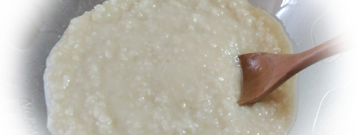
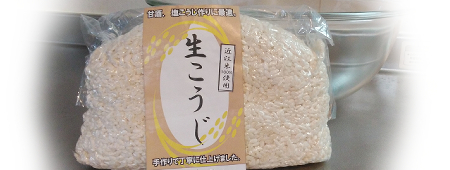

麹の魅力

麹は、腸内環境を整える、免疫力の向上、美肌効果など、さまざまな効能があると言われています。
実は私は、そういった効能はあまり気にしておらず、麹を使う理由といえば、それはもう『食品が美味しくなる！』これに尽きます。
醤油、味噌、お酢、みりん、日本酒、どれも和食に欠かせない調味料。甘酒や、べったら漬け・三五八漬けも、和食ならでは♪全て麹の力でできる食品です。
特に塩麹や醤油麹は、塩の代わりに使うだけで味に深みが出て、お肉やお魚が柔らかくなります。パサパサしている鶏むね肉も、塩麹や醤油麹に一晩漬ければしっとり柔らか♪これが麹の魅力です。
発酵の力

麴菌は白カビの一種で、タンパク質分解酵素を持っています。米、豆、麦などのタンパク質を分解して、アミノ酸を生成します。このアミノ酸が旨味成分！
微生物の力によって、食物の栄養素を分解し、消化・吸収をよくするなど、人間にとって有益な働きをするのものを発酵といい、人間にとって有害であれば腐敗になります。
麹発酵の力でできた食品は、とにかく美味しい！私は醤油、味噌、お酢、塩麹がないと料理ができないといっても過言ではないほど麹に頼っています。ありがとう麹発酵。おかげで今日も美味しい食事をいただいてます。
麹の種類

一番よく目にするのは米麹。お米に麹の種菌を混ぜたものです。米麹にも、生麹と乾燥麹があり、玄米麹や、発芽玄米麹もあります。
他にも、八丁味噌の材料になる大豆麹、麦味噌の材料になる麦麹もあります。
ちなみに『麹』を【糀】と書くこともあるのですが、これは米麹にのみ使用する漢字です。『麹』が中国からきた漢字で『こうじ』のこと、【糀】は和製漢字（日本で作った漢字）で【米こうじ】を指します。